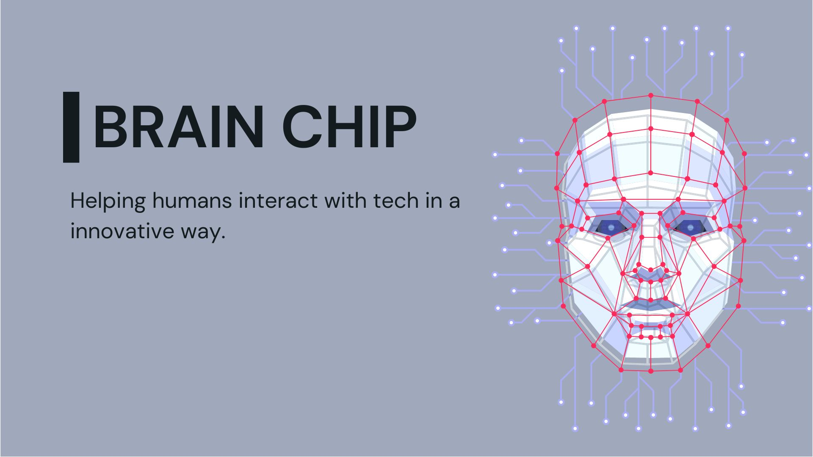

Introduction
A brain chip is a very tiny computer chip that is similar to a size of a coin. Our brain pretty much works similarly to a computer i/o process. There are 86 Billion neurons in your brain.
Bio-MEHHHH
Neurons are responsible for sending or receiving information. A neuron is divided into three sub-parts: A dendrite responsible for receiving a signal, a cell body that processes the signal, and an axon that sends a signal out. You might feel that this is very relatable with a computer I/O process. This chip is implanted into the human skull using neural implants. This chip connects to thousands of neurons in the brain and stimulates them. These chips are capable of converting the natural axon single into ones readable by the chip. It also includes an external non-invasive technique such as EEG. EEG (electroencephalogram) is a test that measures electrical activity in the brain using small, metal discs (electrodes) that are attached to the scalp. brain chips work on the principle of BCI (Brain Computer Interfacing).
Brain Computer Interfacing
Brain-computer interfacing is originating in work from the 1960s by
Delgado and Fetz. Delgado developed an implantable chip (which he called
a “stimoceiver”) that could be used to both stimulate the brain by radio
and send electrical signals of brain activity by telemetry. The most
significant feature of BCI are 1. Brain recording:
Signals from the brain are recorded using either invasive or
non-invasive recording techniques.
2. Signal
Processing: Raw signals are pre-processed after acquisition and
techniques for artifact reduction.
3. Brain
stimulation: The stimulation pattern received from the signal
processing component is used in conjunction with invasive or
non-invasive stimulation techniques.
Types of BCI
- Invasive BCIs: These involve recording from or stimulating neurons inside the brain.
- Non-Invasive BCIs: These employ techniques for recording from or stimulating the brain without penetrating the skin or skull.
With both of these types, we can have BCIs which Only record from the brain (and translate neural data into control signals for output devices.) or Only stimulate the brain (and cause certain desired patterns for neural activity).
Elaborating BCI
The process of building a BCI is very complicated and needs a good knowledge of neuroscience, computer science, and machine learning. The one working on building a BCI should know as much as possible about working on a Neuron which is the most important part of the human brain which will make the Brain chip ready and help in the I/O process. Neuron is a tiny cell that is generally regarded as the basic computational unit of the nervous system. It is responsible for sending or receiving information.
There are a various types of brain responses one of which is Conditional response. Conditional responses are also seen in single neurons and networks. It requires some kind of condition for that operation to happen successfully. For example: Eberhard Fetz at the University of Washington utilized the idea of conditioning to demonstrate that the activity of a single neuron in a primate motor cortex can be conditioned to control the needle of an analog meter. The movement of the needle was directly coupled to the firing rate of the neurons, when the needle crossed a threshold, the monkey was rewarded. After several trials, the monkey learned to consistently move the needle past the threshold by increasing the firing rate of the recorded neuron. BCIs were able to read the electrical signals inside the neurons. EEG was widely used to measure electrical activity happening in the brain using small metal discs attached to the scalp.
There are n number of organisations working on BCI. Example’s are kernel.com, Elon Musks neuralink, sensorium and etc.
Conclusion
Brain Computer Interfacing indeed is a very good tech for the future of humans. It would allow controlling paralyzed people and they can just be better if their brain is active. Non-Invasive BCI is actually more affordable and easier to study and implement. But Invasive BCI is a quite complex technology on implmentation.
Talking about Brain Chips, drawing out a conclusion from this is a bit hard, because Brain Chips are a hell lot of work and complexity. There are chances of death more than success. Making a brain chip, buying raw material, installing it, is too costly for common people.
References
-
-
A simple approach to neuroscience By Abhijeet Satani.
-
Gooooooolag.
-
Brain Computer Interfacing By Rajesh P.N. Rao.